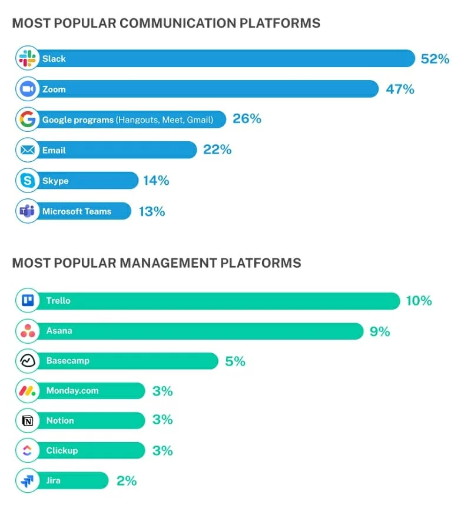
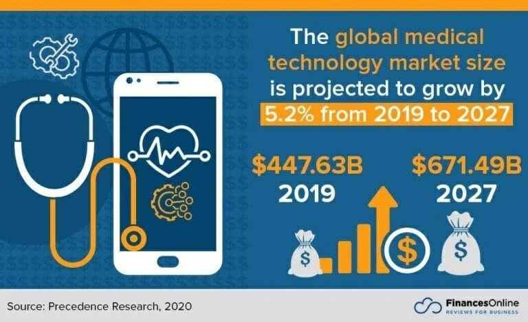
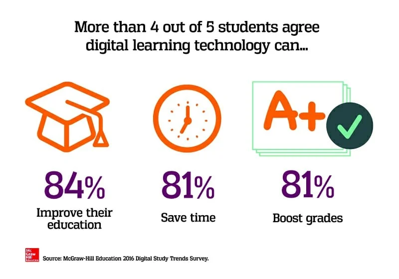
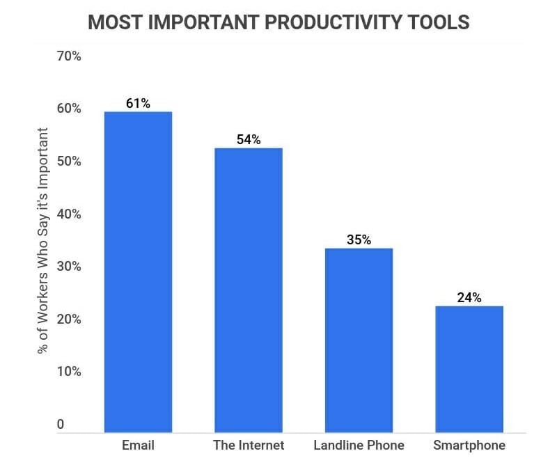
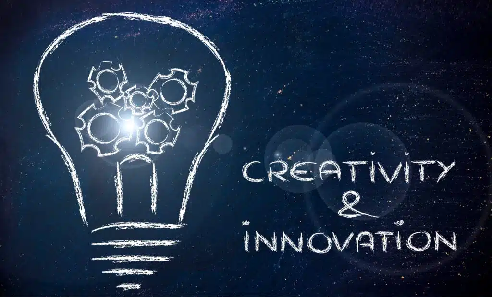

The development over time of systematic techniques for making and doing things. The term technology, a combination of the Greek technē, "art, craft," with logos, "word, speech," meant in Greece a discourse on the arts, both fine and applied. When it first appeared in English in the 17th century, it was used to mean a discussion of the applied arts only, and gradually these "arts" themselves came to be the object of the designation. By the early 20th century the term embraced a growing range of means, processes, and ideas in addition to tools and machines. By mid-century technology was defined by such phrases as "the means or activity by which man seeks to change or manipulate his environment." Even such broad definitions have been criticized by observers who point out the increasing difficulty of distinguishing between scientific inquiry and technological activity.
Technology improved communication significantly. Long-distance business communication is possible within seconds thanks to telephones, radio, television, fax machines, emails, mobile phones, and the internet. Employees use communication tools to collaborate with customers effectively. Some of the best team communication tools used to keep the company's day-to-day operations running smoothly are Zoom and Monday.com.

Healthcare is an integral part of our everyday life. Technology and scientific knowledge have had a positive impact on the healthcare industry. It improves human life by improving hygiene, diagnosis, and treatment. The availability of medical technology like MRIs, ventilators, and machines that produce modern medicine has improved healthcare beyond recognition. For example, vaccines helped to eradicate diseases such as measles, diphtheria, and smallpox which once caused massive epidemics.

Technology improved the learning process for students and teachers. Students must not be present in a physical classroom to learn. Education software improves the online learning experience through engaging and comprehensive lessons. People with learning disabilities can learn uniquely, thanks to assistive technology. Text-to-speech software (TTS) helps students with visual impairment read texts.

Technology improves productivity at your workplace. With productivity tools, tedious data-entry jobs which take much time to finish are doable in minutes. If you want to maximize your results, your employees should focus more on high-level tasks. Leave out the low-level activities for automation software to handle. The industrial revolution shifted businesses from small to large-scale production. Thanks to more effective manufacturing tools, most companies saw increased production levels. Imagine the impact future technologies like artificial intelligence and quantum computers will have on workplace productivity. Surely, exciting times lie ahead.

As technology advances, it has the potential to automate jobs and displace workers. This can have a significant impact on employment and the workforce, requiring individuals to develop new skills and adapt to new roles.
Technology applications can collect and store vast amounts of personal data, which raises concerns around privacy and security. It is critical to develop safeguards to protect sensitive information from misuse and abuse.
As technology advances, it can raise ethical questions around the appropriate use of technology. For example, Artificial Intelligence (AI) raises ethical concerns around bias and transparency, as well as the potential misuse of AI for harmful purposes.

In a world defined by rapid technological advancement, understanding the implications of technology has never been more crucial. Technology is not just a collection of tools or systems; it represents a fundamental shift in how we interact with our environment, communicate, and even perceive our existence. From the advent of the wheel to the rise of artificial intelligence (AI), the journey of technology has been transformative. But as we stand on the brink of new innovations, a pressing question arises: What is the conclusion of technology, and what does it mean for our future?